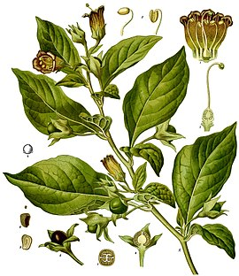
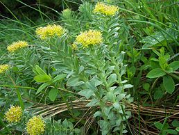

В Україні трапляється в Криму, Карпатах, західному Лісостепу, Розточчі, Опіллі; отруйна (містить ряд алкалоїдів групи атропіну). При отруєнні беладонною стан збудження нервової системи швидко змінюється її пригніченням; бувають випадки смерті. Характерна риса отруєння — розширення зіниць. Лікування: промивання шлунково-кишкового тракту, у тяжких випадках — серцеві і заспокійливі засоби. Настойки і екстракти беладонни використовують у медицині як болезаспокійливі і протиспазматичні засоби при шлунково-кишкових, нервових та інших захворюваннях. Беладонна культивується в Україні як лікарська рослина.

Аконіт опушеноплодий (Aconitum lasiocarpum (Rchb.) Gáyer) — багаторічна трав'яниста рослина роду тоя родини жовтецевих. Поширений переважно у Східних Карпатах. Занесено до Червоної книги України.Поширений переважно у Східних Карпатах, окремі ізольовані локалітети відмічені в Західних Карпатах (Татрах) та Південних Карпатах (околиці м. Брашова в Румунії)..
В Україні зростає в Бескидах, на Чорногорі, в Ґорґанах та на гірському масиві Свидовець-Негровець. На Подільській височині окремі ізольовані локалітети у Медоборах та на Вороняках. На Малому Поліссі єдине місцезнаходження в окол. с. Кліпець в Дубнівському районі Рівненської області.
авяниста ослина, що вільно плаває у поверхневому шарі води, плейстофіт. Корені відсутні. Стебла завдовжки 10-60 см, інколи можуть сягати 1,5 м. Листки кількаразово розсічені на ниткоподібно-лінійні частки, частина яких перетворена в повітряні ловчі пухирці, кількість яких на кожному з пагонів коливається від 80 до 200 штук. Суцвіття — 3-12-квіткова китиця, піднесена над поверхнею води. Вісь суцвіття змієподібно вигнута та потоншується біля верхівки. Квітконіжки у 3-5 разів довші за приквітки. Віночок 12-18 мм завдовжки, жовтий з червоними смужками, двогубий. Верхня губа в 2-3 рази довша за випуклу нижню. Шпорка загострена, завдовжки 5-7,5 мм. Маточка з майже сидячою дволопатевою приймочкою складається з двох плодолистків. Тичинки вільні. Пилкові зерна сплющено-кулясті, в обрисі з полюса 12-15 лопатеві, з малопомітною текстурою. Плід — багатонасінна куляста коробочка завширшки 4 мм.

Кореневище товсте, коротке, крихке, місцями з металевим золотистим полиском, звідси назва «золотий корінь». Від кореневища відходять кілька прямих однорічних світло-зелених пагонів з листками. Листки еліптичної форми, загострені, цілокраї. Квітки двостатеві, пелюстки жовті. Суцвіття верхівкове, зібране в багатоквітковий щиток. Цвіте в червні-липні, насіння достигає в серпні-вересні. В Україні рослина поширена лише в Карпатах. Занесена до Червоної книги зі статусом «вразливий» через тотальне знищення заготівельниками кореневищ, після чого рослина гине і вже не відновлюється. Введена в культуру. Її успішно вирощують на грядках і висаджують у природних умовах: на берегах річок, на галявинах, високих схилах[4]. Рослина самосійна. Найкращі сходи дає навесні під прозорою плівкою
Стебло прямостояче або трохи зігнуте, зелене, голе і гладке, рівномірно улиснене 2-5 світло-зеленими листками, при основі огорнутими буруватими піхвами. Черешки короткі. Форма листків міниться від овальної або овально-яйцеподібної до довгасто-ланцетної. Їхня довжина складає від 3 до 11 см, ширина — від 3 до 5 см. Слід зазначити, що верхні листки помітно дрібніші і гостріші за нижні. Суцвіття — поодинокий, негустий, циліндричний колос завдовжки 2-10 (15[5]) см, що складається з 5-30 (частіше з 10-25) квіток. Приквітки лінійно-ланцетні або ланцетні, тупувато загострені, довші за квітки, втім, верхні часто бувають трохи коротші. Квітки 5-7 мм завдовжки, двостатеві, зигоморфні, зі слабким медовим запахом. Листочки оцвітини жовтувато-зелені чи буруваті, складені шоломом. Два листочки зовнішнього кола 4,5-6 мм завдовжки та 2-4 мм завширшки, яйцеподібні, тупуваті. Два листочки внутрішнього кола лінійні, тупуваті, з однією жилкою.